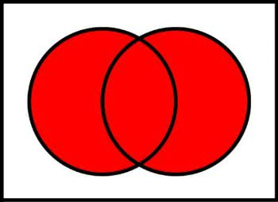
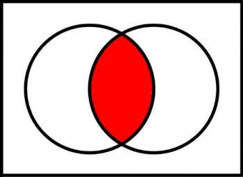
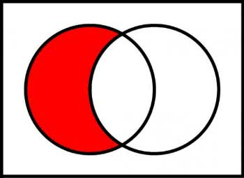
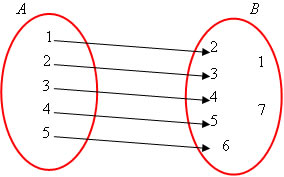
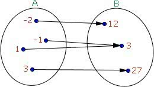
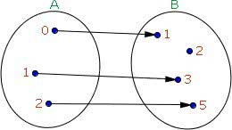
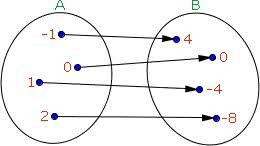
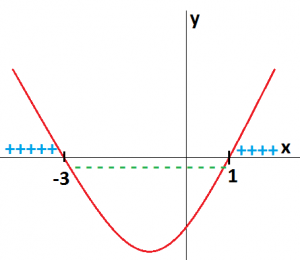

1. Definições
2. Propriedades
1. Propriedades
2. Racionalização
1. Definição
Fatorar é transformar uma soma de duas ou mais parcelas em um produto de dois ou mais fatores:
2. Agrupamento
3. Diferença de quadrados
4. Quadrado perfeito
5. Diferença de cubos
6. Cubo perfeito
Lembrando que isso segue o binomio de newton!
1. União (\(\cup\))
2. Intersecção (\(\cap\))
3. Diferença de Conjuntos
A = {a, b, c, d}; B = {c, d}
A - B = {a, b}

1. Domínio, contradomínio e imagem de uma função
Domínio: representado por todos os elementos do conjunto A = {1, 2, 3, 4, 5}
Contradomínio: representado por todos os elementos do conjunto B = {1, 2, 3, 4, 5, 6, 7}
Imagem: representada pelos elementos do contradomínio (conjunto B) que possuem correspondência com o domínio (conjunto A = {2, 3, 4, 5, 6})
2. Sobrejetora
Uma função é sobrejetora quando o contradomínio é igual a imagem, ou seja, não pode existir sobras.
3. Injetora
Uma função é injetora se elementos distintos de A têm imagens distintas em B, ou seja, possuem somente uma flecha e pode existir sobras.
4. Bijetora
Uma função é bijetora quando é ao mesmo tempo sobrejetora e injetora, ou seja, todos os elementos de A possuem um correspondente em B.
1. Definição
Chama-se função polinomial do 1º grau a toda função \(f:R \rightarrow R\) definida por:
$$\LARGE f(x) = ax + b$$
2. Inequação do 1º Grau
Chama-se inequação toda sentença do tipo ax + b > 0. Para resolver basta isolar o x: \(\large \quad 2x - 6 > 0 \rightarrow 2x > 6 \rightarrow x > 3\)
1. Definição
Chama-se função polinomial do 2º grau a toda função \(f:R \rightarrow R\) definida por:
$$\LARGE f(x) = ax^2 + bx + c$$
a > 0 - Curvatura para cima
a < 0 - Curvatura para baixo
b > 0 - Atravessa o eixo y crecendo
b < 0 - Atravessa o eixo y descrescendo
b = 0 - Atravessa o eixo y horizontalmente
c - Onde o gráfico corta o eixo y
2. Vértica da parábola
Basta encontrar o x e depois substituir no y com a fórmula:
$$\LARGE \frac{-b}{2a}$$
2. Inequação do 2º Grau
Chama-se inequação toda sentença do tipo \(ax^2 + bx + c > 0\). Para resolver basta analisar no gráfico onde está sentença é verdadeira: $$\large x^2 + 2x - 3 > 0$$

V = {xER | x < -3 ou x > 1}
Quando x é menor que -3 e maior que 1 a sentença é verdadeira.
1. Definição
Chama-se função polinomial do 2º grau a toda função definida por:
$$\LARGE f(x) = a^x$$
2. Inequação Exponencial
Chama-se inequação toda sentença do tipo \(\large a^x > b\). Para resolver basta igualar as bases: $$\large \left( \frac{1}{3} \right)^x < \left( \frac{1}{3} \right)^2$$
Como as bases estão entre 0 e 1, 0 < a < 1, deve-se inverter o sinal:
V = {xER | x > 2}
1. sen, cos, tg
2. Relações fundamentais e auxiliares
Relações Auxiliares:
1. Definição
2. Área do setor
Para calcular a área do setor basta realizar a seguinte regra de três:
Quinhetismo (1500 - 1601)
O Quinhentismo representa a primeira manifestação literária no Brasil que também ficou conhecida como "literatura de informação". É um período literário que reúne relatos de viagem com características informativas e descritivas. São textos que descrevem as terras descobertas pelos portugueses no século XVI, desde a fauna, a flora e o povo. Vale lembrar que o Quinhentismo brasileiro ocorreu paralelo ao Classicismo português e o nome do período refere-se a data de início: 1500.
Quinhentismo no Brasil
Com a chegada dos portugueses em território brasileiro em 1500, as terras encontradas foram relatadas pelos escrivães que acompanhavam os navios. Assim, a literatura de informação foi produzida pelos viajantes no início do século XVI, no período do Descobrimento do Brasil e das Grandes navegações. Além disso, os jesuítas, responsáveis por catequizarem os índios, criaram uma nova categoria de textos que fizeram parte do quinhentismo: a "literatura de catequese". Os principais cronistas desse período são: Pero Vaz de Caminha, Pero Magalhães Gândavo, Padre manuel da Nóbrega e Padre José de Anchieta.
Características do Quinhentismo
- Crônicas de viagens
- Textos descritivos e informativos
- Conquista material e espiritual
- Linguagem simples
- Utilização de adjetivos
Autores e Obras
Pero Vaz de Caminha (1450-1500)
Escrivão-mor da esquadra liderada por Pedro Álvares Cabral (1468-1520), Pero Vaz de Caminha, escritor e vereador português, registrou suas primeiras impressões acerca das terras brasileiras. Fez isso por meio da "Carta de Achamento do Brasil" datada de 1.º de maio de 1500.
A Carta de Pero Vaz de Caminha, escrita para o Rei de Portugal, D. Manuel, é considerada o marco inicial da Literatura Brasileira, visto ser o primeiro documento escrito sobre a história do Brasil. Seu conteúdo aborda os primeiros contatos dos lusitanos com os indígenas brasileiros, bem como as informações e impressões sobre a descoberta das novas terras.
José de Anchieta (1534-1597)
José de Anchieta foi historiador, gramático, poeta, teatrólogo e um padre jesuíta espanhol. No Brasil, ele teve a função de catequizar os índios sendo um defensor desse povo contra os abusos dos colonizadores portugueses. Dessa maneira, ele aprendeu a língua tupi e desenvolveu a primeira gramática da língua indígena, chamada de "Língua Geral".
Suas principais obras são "Arte de gramática da língua mais usada na costa do Brasil" (1595) e "Poema à virgem". A obra do Padre José de Anchieta só foi totalmente publicada no Brasil na segunda metade do século XX.
Pero de Magalhães Gândavo (1540-1580)
Pero de Magalhães foi gramático, professor, historiador e cronista português. Ficou conhecido pelos relatos que fez sobre a fauna, a flora e a dimensão das terras brasileiras em seu livro "História da província de Santa Cruz a que vulgarmente chamamos de Brasil".
Além dos animais distintos e das plantas exóticas, ele descreve sobre os povos indígenas e a descoberta do Brasil por Pedro Álvares Cabral. Outra obra que merece destaque é "O Tratado da Terra do Brasil" (1576).
Manuel da Nóbrega (1517-1570)
Padre Manuel da Nóbrega foi um jesuíta português e chefe da primeira missão jesuítica à América: Armada de Tomé de Sousa (1549). Participou da primeira missa realizada no Brasil e da fundação das cidades de Salvador e Rio de Janeiro.
Seu trabalho no Brasil foi de catequizar os índios e suas obras que merecem destaque são:
- "Informação da Terra do Brasil" (1549)
- "Diálogo sobre a conversão do gentio" (1557)
- "Tratado contra a Antropofagia" (1559)
Barroco no Brasil (1601 - 1768)
O Barroco no Brasil tem início no final do século XVII. No país, essa tendência artística teve grande destaque na arquitetura, escultura, pintura e literatura. Na literatura, o marco inicial do barroco é a publicação da obra “Prosopopeia” (1601) de Bento Teixeira. Na escultura e arquitetura, Aleijadinho foi sem dúvida um dos maiores artistas barrocos brasileiros.
Contexto Histórico
Influenciado pelo barroco português, no Brasil este estilo se desenvolveu durante o período colonial no chamado “Século de Ouro”. Foi durante o ciclo do ouro que a exploração desse minério foi a principal atividade econômica desenvolvida no país. Minas Gerais foi o grande foco onde muitas jazidas foram encontradas.
Nessa época, a primeira capital do Brasil, Salvador, foi transferida para o Rio de Janeiro. Diante disso, o número de habitantes no Brasil aumentou consideravelmente o que propiciou uma época de forte desenvolvimento econômico no país. No barroco mineiro, merece destaque o escultor e arquiteto brasileiro: Aleijadinho.
Características do Barroco
- Linguagem dramática
- Racionalismo
- Exagero e rebuscamento
- Uso de figuras de linguagem
- União do religioso e do profano
- Arte dualista
- Jogo de contrastes
- Valorização dos detalhes
- Cultismo (jogo de palavras)
- Conceptismo (jogo de ideias)
Principais Autores e Obras
- Bento Teixeira (1561-1618): autor de “Prosopopeia” (1601), poema épico com 94 estrofes que exalta a obra de Jorge de Albuquerque Coelho, terceiro donatário da capitania de Pernambuco.
- Gregório de Matos (1633-1696): um dos maiores representantes da literatura barroco no Brasil, que se destacou com sua poesia lírica, religiosa, erótica e satírica. É conhecido como “Boca do Inferno”, uma vez que sua poesia ironizava diversos aspectos da sociedade.
- Manuel Botelho de Oliveira (1636-1711): foi o primeiro brasileiro a publicar versos no estilo barroco. De sua obra destaca-se: “Música do Parnaso” (1705).
- Frei Vicente de Salvador (1564-1636): historiógrafo e o primeiro prosador do país. De sua obra destacam-se: “História do Brasil” e “História da Custódia do Brasil”.
- Frei Manuel da Santa Maria de Itaparica (1704-1768): autor de “Eustáquios” e “Descrição da Ilha de Itaparica”.
Arcadismo (1768 - 1808)
No Brasil, o Arcadismo teve como marco inicial a publicação de “Obras Poéticas”, de Cláudio Manuel da Costa em 1768 e, ademais, a fundação da “Arcádia Ultramarina”, em Vila Rica. Vale lembrar que o nome dessa escola literária provém das Arcádias, ou seja, das sociedades literárias da época. Os principais escritores brasileiros desse período são: Cláudio Manuel da Costa, Santa Rita Durão, Basílio da Gama e Tomás Antônio Gonzaga.
Características do Arcadismo
- Exaltação da natureza
- Valorização do cotidiano e da vida simples, pastoril e no campo (bucolismo)
- Crítica a vida nos centros urbanos
- Modelo clássico
- Linguagem simples
- Utilização de pseudônimos
- Objetividade
- Temas simples: amor, vida, casamento, paisagem
- Fugere Urbem (fugir da cidade)
- Inutilia Truncat (cortar o inútil)
- Aurea Mediocritas (mediocridade áurea/vida comum)
- Locus Amoenus (refúgio ameno/agradável)
Autores Brasileiros do Arcadismo
Cláudio Manuel da Costa (1729-1789)
Poeta, advogado e jurista brasileiro, Cláudio Manuel da Costa é considerado o precursor do Arcadismo no Brasil e destacou -se por sua obra literária, mais precisamente, a poesia. O poeta mineiro em seus textos, aborda elementos locais, descrevendo paisagens, temática pastoril e expressando um forte sentimento nacionalista.
Acusado de participar da Inconfidência Mineira junto com Tiradentes, foi preso em 1789 e suicidou-se na cadeia. Suas obras que merecem destaque: Obras Poéticas (1768) e Villa Rica (1773).
José de Santa Rita Durão (1722-1784)
Autor do poema épico Caramuru (1781), Freire Santa Rita Durão foi poeta e orador, considerado um dos precursores do indianismo no Brasil. Influenciado por Camões, o poema Caramuru, com subtítulo “Poema épico do Descobrimento da Bahia”, é baseado no modelo da epopeia tradicional: proposição, invocação, dedicatória, narração e epílogo. É composto de dez cantos e versos decassílabos em oitava rima.
O texto conta a história de um português, o Caramuru, que após ter naufragado em terras brasileiras, começa a viver com os índios Tupinambás. Suas principais obras: Pro anmia studiorum instauratione oratio (1778) e Caramuru (1781).
José Basílio da Gama (1741-1795)
Poeta mineiro e autor do poema épico O Uraguai (1769), Basílio da Gama, nesse texto, aborda as disputas entre os europeus, os jesuítas e os índios sendo considerado um marco no literatura brasileira. Diferente do poema épico clássico, O Uraguai é composto de cinco cantos, com ausência de rima (rima branca) e estrofação.
Participou da Arcádia Romana na Itália e foi preso em Portugal em 1768, acusado de manter relações de amizades com os jesuítas. Suas Principais obras são: O Uraguai (1769), Epitalâmio às Núpcias da Senhora Dona Maria Amália (1769), A Declamação Trágica (1772) e Quitúbia (1791).
Tomás Antônio Gonzaga (1744-1810)
Jurista, Político e Poeta luso-brasileiro, Tomás Antônio Gonzaga é um dos grandes poetas árcades de pseudônimo Dirceu. A obra que merece destaque é Marília de Dirceu (1792) carregada de lirismo e baseada no seu romance com a brasileira Maria Doroteia Joaquina de Seixas. Com fortes impulsos afetivos, Dirceu declara-se para sua pastora idealizada: Marília. Suas principais obras: Marília de Dirceu e Cartas Chilenas (1863).
Curiosidades
- Os autores árcades portugueses que merecem destaque são: Manuel Maria Barbosa du Bocage, António Dinis da Cruz e Silva, Correia Garção, Marquesa de Alorna e Francisco José Freire.
- Outros escritores brasileiros que merecem destaque são: Inácio José de Alvarenga Peixoto (1744-1793) e Silva Alvarenga (1749-1814).
- Apesar de ser um poeta nascido em Portugal, a cidade de Marília, no Paraná recebe esse nome em homenagem ao escritor Tomás Antônio Gonzaga.
1. O descobrimento da célula
A descoberta da célula aconteceu após o descobrimento do microscópio por Hans e Zacarias Janssen (1590). Robert Hooke, 1665, apresentou à Real Sociedade de Londres resultados de suas pesquisas sobre a estrutura da cortiça observada ao microscópio em finos cortes. O material apresentava-se formado por pequenos compartimentos hexagonais delimitados por paredes espessas, lembrando, o conjunto, os favos de mel das abelhas.
Cada compartimento foi chamado de célula (pequena cavidade). Sabe-se hoje que o tecido observado por Hooke (súber) está formado por células mortas, em cujas paredes houve decomposição de suberina, tornando-as impermeáveis e impedindo as trocas de substâncias (entrada de alimento e oxigênio, saída de detritos etc.) Após a suberificação e morte do tecido, restam as paredes espessas, delimitando espaços cheios de ar.

2. Estrutura de uma célula eucariótica animal

Membrana Plasmática: a membrana plasmática, membrana celular ou plasmalema é um envoltório fino, poroso e microscópico que reveste as células dos seres procariontes e eucariontes. É uma estrutura semipermeável, responsável pelo transporte e seleção de substâncias que entram e saem da célula. Tendo com funções a permeabilidade seletiva (controle da entra e saída de substâncias), proteção das estruturas celulares, delimitação do intra e extracelular, transporte de substâncias essenciais ao metabolismo celular e reconhecimento (glicocalix).
Citoplasma: é o constituinte mais abundante, formado pelo citosol e os organoides celulares. O citosol, principal componente do citoplasma, é um líquido no qual estão mergulhados os organoides celulares.
Ribossomos: os ribossomos são pequenos grânulos que aparecem livremento no cetoplasma ou aderidos às membranas do retículo endoplasmático. Tendo como como função a síntese de proteinas.
Retículo endoplasmático: trata-se de uma estrutura que auxilia a distribuição e o armazenamento de substâncias celulares. Existindo dois tipos: granulas e liso. O granular ou rugoso apresenta ribossomos aderidos às suas membranas, o que não acontece com o liso.
Mitocôndria: ocorrem as etapas de respiração celular, processo que fornece a energia necessária às atividades da célula.
Complexo Golgiense: organoide contituido por uma pilha de vesículas circulares e achatadas, servindo principalmente para armazenamento de secreções, substâncias úteis produzidas e eliminadas pela célula.
Lisossomo: são pequenas bolsas formadas por uma membrana que envolve enzimas, elementos responsáveis pela digestão de substâncias no meio intracelular.
Centrossomo: organoide situado no centro da célula e contituído por dois centríolos, pequenos cilíndros perpendiculares entre si, que exercem importantes funções no processo de divisão celular.
Citoesqueleto: a forma celular é mantida pelo citoesqueleto, um conjunto de filamentos de natureza proteica, existente no citoplasma.
Núcleo: situado geralmento no centro da célula, o núcleo é envolvido por uma dupla e porosa membrana e apresenta no seu interior o nucléolo e a cromatina. O nucléolo é um corpúsculo que origina os ribossomos. Estruturalmente, a cromatina é formada pelo DNA, onde aparecem os genes, por meio dos quais o núcleo coordena as funções celulares.
3. Estrutura de uma célula bacteriana
No centro da célula, destaca-se o nucleoide, constituído por uma única e enovelada molécula de DNA, que representa o material genético da célula.

4. Os vírus
Os vírus são acelulares, ou seja, não apresentam estrutura celular, sendo constituídos por uma macromolécula de ácido nucleico envolvida por uma cápsula de natureza proteica. São parasitas obrigatórios de células vivas, pois só se reproduzem no interior delas.